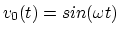

The circuit shown below takes an input
 and generates
two outputs  and
and  .
.

Find the current in the bridge circuit shown below, assuming the input voltage is .
Hints: Use  ,
,  and (no need to solve DE!).
For second period, assume
and (no need to solve DE!).
For second period, assume  , and use as the initial
value. In the final expression, replace by
, and use as the initial
value. In the final expression, replace by  .
.